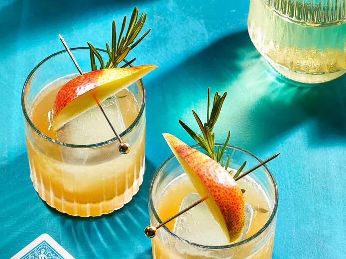

Spiced Pear Old fashioned

Description
Ingredients for Spiced Pear Old fashioned
- ¼ pear, chopped
- 2 sprigs fresh rosemary, divided
- 1 lemon twist
- 1 teaspoon pure maple syrup
- 3 dashes cardamom bitters
- 1 ½ fluid ounces bourbon
- ½ fluid ounce ginger liqueur
- 1 cup ice cubes
- 3 ounces club soda, chilled
- 1 very large ice cube
- 1 pear wedge for garnish
Steps
- Muddle chopped pear, 1 rosemary sprig, lemon twist, maple syrup, and bitters in a cocktail shaker with a muddler or the handle of a wooden spoon until pear is liquified.
- Add bourbon, ginger liqueur, and 1 cup ice to the cocktail shaker. Cover and shake until well chilled.
- Place large ice cube into the rocks glass and set a small fine sieve over the glass.
- Strain the drink through the cocktail shaker top and the sieve to catch any large pieces of pulp or rosemary
- Top with club soda. Garnish with pear wedge and rosemary sprig.
Recipe originally from:
Allrecipes.com